# Download the dataset
download.file("https://github.com/mixOmicsTeam/mixOmics/raw/master/data/breast.TCGA.rda", destfile = "TCGA.rda")
# load the data
load("TCGA.rda")Multi-Omics Factor Analysis (MOFA)
Introduction
In classical data integration, we would like to use information across different modalities (eg., transcriptome, proteome and metabolome) to gain more comprehensive insights into the biological systems under study. This type of data can be used for an array of different purposes including but not limited to molecular classification, stratification of patients, outcome predictions and understanding of regulatory processes such as gene regulation and pathway analysis.
In this specific context, we are going to focus on unsupervised modeling and segmentation, which are promising because each type of omics data may contribute valuable information to the overall understanding of complex biological systems. By leveraging unsupervised modeling, we can uncover hidden patterns and relationships within the data without relying on predefined labels. This is especially beneficial when dealing with omics data, where the volume and complexity can be overwhelming. Furthermore, segmentation allows us to group similar data points, making it easier to identify and analyze specific subsets of the data. Given the heterogeneous nature of omics data, integrating multiple types can provide a more comprehensive view of the underlying biological processes.
In this lab we are going to learn the basics of how Multi-Omics Factor Analysis (MOFA) uses multiple data views to uncover hidden but common pattern within the data. Before start using MOFA we are going to learn a few background concepts to understand and appreciate how this technique works. Let’s start with typical PCA.
PCA
PCA is a special case of SVD in which basis vectors, or principal components, are the eigenvectors of the data’s covariance matrix. These principal components are orthogonal and represent the directions of maximum variance in the data. If you want to know more about PCA look at here.
Principal Component Analysis (PCA) might sound complex at first, but it can be understood intuitively as a method for simplifying and summarizing complex, multidimensional data.
Given a dataset containing the expression levels of thousands of genes from a group of individuals. Each individual is a complex data sample characterized by the expression of all these genes. Visualizing or analyzing such high-dimensional data can be very difficult.
PCA simplifies this complex, multidimensional space by identifying the “principal components” of the data, which are new axes that capture the most significant patterns in the data. These axes are combinations of the original gene expression levels that explain the maximum variance in the dataset.
For example, the first principal component (PC) might represent a combination of genes that change the most across all individuals. It could capture a general trend in gene expression that separates individuals based on age or response to a treatment. The second PC (orthogonal to the first), might capture the next highest variance, showing another layer of structure in the data, and so on.
Formally,PCA is derived from the right singular vectors contained in matrix \(V\). The singular values in \(\Sigma\) are related to the eigenvalues of the covariance matrix of the original data, and they indicate the amount of variance captured by each principal component.
In simpler terms, when we perform SVD on a data matrix \(A\), the columns of \(V\) (the right singular vectors) are actually the principal components of \(A\). The singular values in \(\Sigma\) tell us the importance or weight of these principal components.
The SVD of a matrix \(A \in \mathbb{R}^{m \times n}\) is expressed as: \[ A = U \Sigma V^T \] where
- \(U \in \mathbb{R}^{m \times m}\) is the left singular matrix,
- \(\Sigma \in \mathbb{R}^{m \times n}\) is the diagonal matrix containing the singular values, and
- \(V \in \mathbb{R}^{n \times n}\) is the right singular matrix.
To see this connection clearly, let’s consider the covariance matrix of \(A\), denoted as \(C\): \[ C = \frac{1}{n-1} A^T A \]
When we perform eigen decomposition on \(C\), we get: \[ C = W \Lambda W^T \] where \(W\) contains the eigenvectors and \(\Lambda\) is a diagonal matrix containing the eigenvalues.
Now, if we look at the SVD of \(A\) again: \[ A = U \Sigma V^T \] and compute \(A^T A\), we get: \[ A^T A = V \Sigma^T U^T U \Sigma V^T = V \Sigma^2 V^T \]
Comparing this with the eigen decomposition of \(C\), we observe that the right singular vectors \(V\) are the eigenvectors of \(C\), and the singular values squared in \(\Sigma^2\) are the eigenvalues in \(\Lambda\).
There are other algorithms for doing PCA for example using power methods but almost all of them will converge to the same solution with a certain numerical accuracy.
PCA in practice
Data
Our data has to be in a data.frame where features are in the columns and samples in the rows. For now we are going to use TCGA dataset from mixOmics.
This data set is a small subset of the full data set from The Cancer Genome Atlas that can be analysed with the DIABLO framework. It contains the expression or abundance of three matching omics data sets: mRNA, miRNA and proteomics for 150 breast cancer samples (Basal, Her2, Luminal A) in the training set, and 70 samples in the test set. The test set is missing the proteomics data set.
This data has already been split into a list with two elements. Training and testing. Each element itself is a list of four elements. Three elements are the actual datasets and one is the cancer subtypes.
str(breast.TCGA)List of 2
$ data.train:List of 4
..$ mirna : num [1:150, 1:184] 11.8 12.9 12.3 12 13.4 ...
.. ..- attr(*, "dimnames")=List of 2
.. .. ..$ : chr [1:150] "A0FJ" "A13E" "A0G0" "A0SX" ...
.. .. ..$ : chr [1:184] "hsa-let-7a-1" "hsa-let-7a-2" "hsa-let-7a-3" "hsa-let-7b" ...
..$ mrna : num [1:150, 1:200] 4.36 1.98 1.73 4.36 2.45 ...
.. ..- attr(*, "dimnames")=List of 2
.. .. ..$ : chr [1:150] "A0FJ" "A13E" "A0G0" "A0SX" ...
.. .. ..$ : chr [1:200] "RTN2" "NDRG2" "CCDC113" "FAM63A" ...
..$ protein: num [1:150, 1:142] 0.0491 -0.08 -0.0328 -0.2053 0.0602 ...
.. ..- attr(*, "dimnames")=List of 2
.. .. ..$ : chr [1:150] "A0FJ" "A13E" "A0G0" "A0SX" ...
.. .. ..$ : chr [1:142] "14-3-3_epsilon" "4E-BP1" "4E-BP1_pS65" "4E-BP1_pT37" ...
..$ subtype: Factor w/ 3 levels "Basal","Her2",..: 1 1 1 1 1 1 1 1 1 1 ...
$ data.test :List of 3
..$ mirna : num [1:70, 1:184] 12.8 13.9 12.9 12.4 13.1 ...
.. ..- attr(*, "dimnames")=List of 2
.. .. ..$ : chr [1:70] "A54N" "A2NL" "A6VY" "A3XT" ...
.. .. ..$ : chr [1:184] "hsa-let-7a-1" "hsa-let-7a-2" "hsa-let-7a-3" "hsa-let-7b" ...
..$ mrna : num [1:70, 1:200] 1.19 2.73 3.05 2.7 3.14 ...
.. ..- attr(*, "dimnames")=List of 2
.. .. ..$ : chr [1:70] "A54N" "A2NL" "A6VY" "A3XT" ...
.. .. ..$ : chr [1:200] "RTN2" "NDRG2" "CCDC113" "FAM63A" ...
..$ subtype: Factor w/ 3 levels "Basal","Her2",..: 1 1 1 1 1 1 1 1 1 1 ...PCA in R
Doing PCA in R using SVD is straight forward. We should just center our data and use the svd function.
# center the data
data_centered_mrna <- scale(breast.TCGA$data.train$mrna,center = TRUE,scale = FALSE)
# do SVD
svd_mrna <- svd(data_centered_mrna)
# calculate the PC scores
calculated_scores <- data_centered_mrna%*%svd_mrna$v
# plot the PC scores
plot(calculated_scores[,1:2],xlab="pc1",ylab="pc2",col=breast.TCGA$data.train$subtype)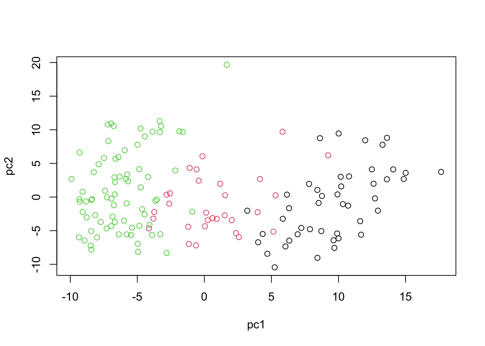
This will give us identical results comapred to the for example standard prcomp function
# do pca using prcomp
pca_prcomp <- prcomp(data_centered_mrna)
# plot the PCA
plot(pca_prcomp$x[,1:2],xlab="pc1",ylab="pc2",col=breast.TCGA$data.train$subtype)In practice there are more specialized packages that can be used to do PCA. mixOmics provides a very powerful PCA method that provide us not only with standard PCA but also with extra advantange (eg., missing value handling, plotting, handling repeated measurements etc).
This observed separation and overlap in the PCA plot is not just a graphical representation but is rooted in the underlying biology of these cancer subtypes. The positioning of the different groups on the PCA plot is influenced by the expression levels of various mRNAs, each contributing differently to the principal components.
Now, as we go deeper into understanding the PCA plot, it becomes essential to explore the concept of loadings. Loadings help us interpret the contribution of each miRNA to the principal components. They provide insights into which specific miRNAs are driving the separation between different cancer subtypes observed in the PCA plot.
We can go ahead and plot the loadings. We start with our most important PC, that is PC1
# loadings for component 1
loadings <- pca_prcomp$rotation[,1]
# Sort the loadings
sorted_loadings <- loadings[order(abs(loadings),decreasing = T)]
# Plot the loadings in a flipped barplot
barplot(sorted_loadings, horiz=TRUE, las=1, main="PCA Loadings", xlab="Loadings", border="blue", col="skyblue")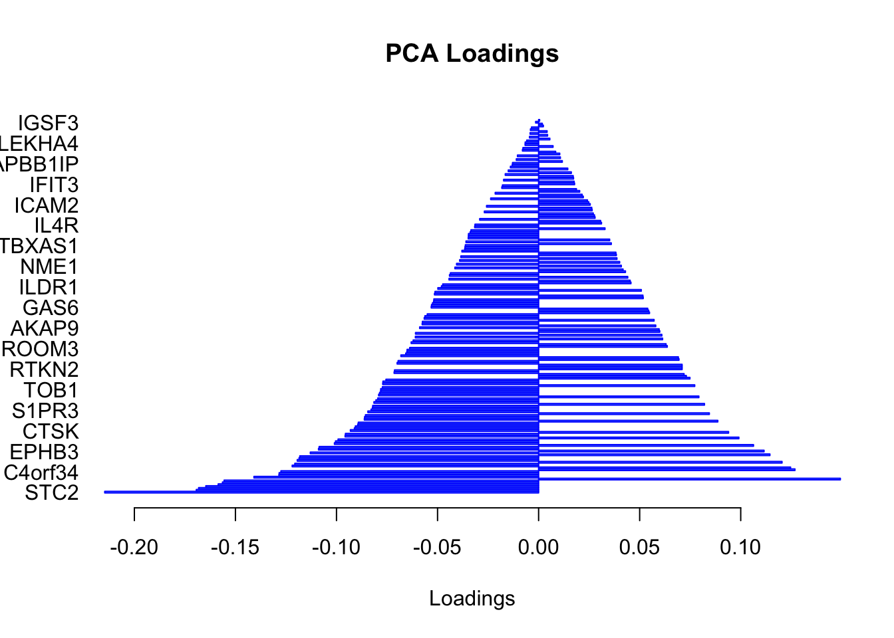
In this bar plot, each bar represents a specific mRNA. The length of the bar corresponds to the value of the loading of that mRNA on PC1, indicating its contribution to this principal component. The mRNAs with the highest absolute contributions are at the bottom, and those with the lowest are at the top, making it easy to identify the most influential mRNAs. Both the length and direction of each bar provide crucial insights into the mRNA’s contribution to the first principal component (PC1). The length of the bar signifies the magnitude of the mRNA’s contribution. Longer bars indicate miRNAs that have a more substantial influence on the variance captured by PC1, highlighting them as key elements in distinguishing different patterns of gene expression within the dataset.
The direction of the bars adds another layer of interpretation. Bars extending to the right represent mRNAs that are positively correlated with PC1, indicating that as the values of these mRNAs increase, so does the score of PC1. Conversely, bars extending to the left suggest a negative correlation, meaning as the values of these miRNAs increase, the score of PC1 decreases. This directional information can be important in understanding the expression patterns of mRNAs in different breast cancer subtypes. For instance, mRNAs that are positively correlated with PC1 might be highly expressed in the Basal subtype but low in others, offering insights into the molecular distinctions between these cancer subtypes.
Score plot together with loading give us powerful tool to investiage pattern in a single dataset.
Probabilistic Principal Component Analysis (PPCA)
After understanding the foundation of PCA, it’s time to explore its probabilistic counterpart, Probabilistic Principal Component Analysis (PPCA). While PCA provides us with a deterministic approach to do data reduction and feature extraction, PPCA introduces a probabilistic framework that models the uncertainties in the data. This transition from a deterministic method to a more flexible, probabilistic one allows for a more systematic understanding of data structures, especially when there’s noise or missing values.
In PPCA, the relationship between the observed data vector $Y $in \(\mathbb{R}^{D}\) and the latent or principal component coordinates \(Z\) in \(\mathbb{R}^{d}\) is expressed by:
\[X = ZW^T + \epsilon\]
Where \(X\) is the observed data vector. \(Z\) represents the latent variables or the principal component coordinates. \(W\) is a matrix of size \(d \times D\) that defines the linear relationship between \(Z\) and \(Y\). \(\epsilon\) is a Gaussian noise term, which accounts for the variability not captured by the principal components.
Given our equation, we start with a prior on the latent variables, \(Z\), assuming they are drawn from a standard Gaussian distribution: \[ p(Z) = N(Z; 0, I) \] This means that the principal component coordinates have a mean of zero and an identity covariance matrix.
Given the linear relationship \(Y = ZW^T + \epsilon\), the conditional distribution of \(X\) given \(Z\) is \(p(X|Z) = N(X; ZW^T, \sigma^2 I)\) This equation suggests that the observed data \(X\) is normally distributed around the value produced by projecting \(Z\) onto the data space using \(W^T\), with a variance of \(\sigma^2\).
Remembre now our observed data is \(X\) but what we are interested in is \(Z\) so we need to calculate \[ p(Z|X)\]. Therefore using the Bayes’ rule for Gaussian distributions:
\[p(z|x) = \frac{p(x|z) \cdot p(z)}{p(x)}\] We don’t need the denominator \(p(x)\) explicitly as it’s a normalization constant.
\[ p(z|x) \propto p(x|z) \cdot p(z) \] In the above equation \(p(z|x)\) is normally distributed thus
\[ p(z|x)=N(z,\mu,\Sigma) \]
It can be shown that
\[ \mu=\sigma^{-2}\Sigma Wx \] and \[ \Sigma^{-1}=I+\sigma^{-2}CC^T \]
To estimate the model parameters, namely \(W\) and \(\sigma^2\), we employ the Expectation-Maximization (EM) algorithm. This iterative algorithm seeks to maximize the likelihood of observing the data \(x\) given the model parameters.
The EM algorithm consists of two main steps:
E-Step: Here, we estimate the distribution of the latent variable \(z\) given the observed data \(x\) and the current estimate of the model parameters.
M-Step: In this step, we update the model parameters \(W\) and \(\sigma^2\) to maximize the expected complete-data log-likelihood.
One challenge in directly maximizing the log-likelihood \(log p(x)\) (which quantifies how well our model describes the observed data) is its complexity due to the latent variable \(z\). To fix this, we introduce a distribution \(q(z)\) over \(z\) and derive a lower bound on the log-likelihood. This lower bound is defined as:
\[log p(x) \geq H(q(z)) + E_q[log p(z) + log p(x|z)]\]
Where \(H(q(z))\) is the entropy of \(q(z)\), and \(E_q[.]\) is the expectation under the distribution \(q\).
Derivation of the lower bound involves KL: \[ log p(x) = log p(x) - D(q(z) || p(z|x)) + D(q(z) || p(z|x)) \] Expanding using properties of KL divergence \[ log p(x) = H(q(z)) + E_q[log p(x, z) - log q(z)] \] and finally decomposing the joint likelihood \(log p(x, z)\) into \(log p(z) + log p(x|z)\)).
\[ log p(x) ≥ H(q(z)) + E_q[log p(z) + log p(x|z)] \]
Given the likelyhood function we can now derive our E and M steps of EM.
We can simply look at what we derived for \(p(z|x)\) which was: \[ \mu=\sigma^{-2}\Sigma Wx \] and \[ \Sigma^{-1}=I+\sigma^{-2}CC^T \]
We can just replace the values to get to expected value of \(Z\)
\[ Z=\sigma^{-2}(I+\sigma^{-2}CC^T)^{-1} Wx \]
We have \(N\) data points so we need to sum over them so, we have: \[\sum_{n=1}^{N} log p(x_n) \geq \sum_{n=1}^{N} \left( H(q(z_n)) + E_{q(z_n)}[log p(z_n) + log p(x_n|z_n)] \right)\]
Expanding the expectation term for \(N\) data points and using the Gaussian distributions, we get: \[\sum_{n=1}^{N} E_{q(z_n)}[log p(z_n) + log p(x_n|z_n)] = \] \[ - \frac{1}{2\sigma^2} \sum_{n=1}^{N} \left( \lVert x_n - W^⊤z_n \rVert^2 + \text{Tr}{W^⊤Σ_nW} \right) - \frac{1}{2\sigma^2_{\text{old}}} \sum_{n=1}^{N} \lVert z_n \rVert^2 - \frac{N}{2} \text{Tr}{Σ_n} \]
where \(x_n\) is the observed data point and \(z_n\) is the latent representation of \(x_n\). The equation might seem complex but it has three main parts:
- The reconstruction error (\(\lVert x_n - W^⊤z_n \rVert^2\)), which quantifies how well our model can generate the observed data from the latent variables.
- The variance or spread of the latent variables (\(\lVert z_n \rVert^2\)).
- The term (\(\text{Tr}{W^⊤Σ_nW}\)) which captures the total variance explained by the latent variables.
To determine the model parameters that maximize this bound, we are going to differentiate with respect to \(W\) and \(\sigma^2\). Setting these derivatives to zero and we are almost there!
\[W = \left( \sum_{n=1}^{N} Σ_n + z_n z_n^⊤ \right)^{-1} \sum_{n=1}^{N} z_n x_n^⊤\]
and \[\sigma^2 = \frac{1}{ND} \sum_{n=1}^{N} \left( \lVert x_n - W^⊤z_n \rVert^2 + \text{Tr}{W^⊤Σ_nW} \right)\]
Recall our expanded equation for the lower bound on the log-likelihood: \[\sum_{n=1}^{N} log p(x_n) \geq \sum_{n=1}^{N} \left( H(q(z_n)) + E_{q(z_n)}[log p(z_n) + log p(x_n|z_n)] \right)\]
The entropy \(H\) of a Gaussian with covariance matrix \(Σ\) is: \[H = \frac{1}{2} log |Σ|\]
Putting this into our equation, we obtain: \[\sum_{n=1}^{N} log p(x_n) \geq \sum_{n=1}^{N} \left( \frac{1}{2} log |Σ| + E_{q(z_n)}[log p(z_n) + log p(x_n|z_n)] \right)\]
We can further expand the right-hand side: \[log p(x) \geq -ND\left(1 + log \sigma^2\right) - N\left(Tr\{Σ\} - log |Σ|\right) - \frac{1}{2\sigma^2_{\text{old}}} \sum_{n=1}^{N} \lVert z_n \rVert^2\]
Here: \(N\) represents the number of data points. \(D\) is the dimension of the data vector $ x_n $.
This equation represents the EM bound after performing the M-step. The objective in the M-step of the EM algorithm is to maximize this bound with respect to the model parameters \(W\) and \(\sigma^2\). By doing so, we iteratively refine our model to better fit the observed data.
Let’s try to implement it:
# Load the breast cancer dataset for training
input_data <- breast.TCGA$data.train$mrna
# Define the number of data points (samples) and the dimensionality of the data (genes/features)
N_data <- nrow(input_data)
D_data <- ncol(input_data)
# Define the number of principal components to be extracted
nPcs <- 2
# Define the convergence threshold and maximum number of iterations for the EM algorithm
threshold <- 0.0001
maxIterations <- 100
# Set a seed for reproducibility
set.seed(123)
# Initialization: Randomly initialize the W matrix from the data
W <- t(input_data[sample(N_data, size = nPcs), , drop = FALSE])
W <- matrix(rnorm(length(W)), nrow(W), ncol(W))
# Precompute W'W for efficiency
WtW <- crossprod(W)
# Compute the latent representation Z based on the initial W
Z <- input_data %*% W %*% solve(WtW)
# Calculate the initial reconstruction and its error
reconstructed <- Z %*% t(W)
error_ss <- sum((reconstructed - input_data)^2) / (N_data * D_data)
# Initialize the iteration counter and the previous objective value for convergence checking
iteration <- 1
previous <- Inf
# Start the EM algorithm
while (TRUE) {
# E-Step: Estimate the covariance of the latent variable Z
Z_cov <- solve(diag(nPcs) + WtW/error_ss)
# Compute the posterior mean of Z
Z <- input_data %*% W %*% Z_cov/error_ss
ZtZ <- crossprod(Z)
# M-Step: Update W based on the estimated Z
W <- (t(input_data) %*% Z) %*% solve((ZtZ + N_data * Z_cov))
WtW <- crossprod(W)
# Recalculate the reconstruction error based on the updated W
error_ss <- (sum((W %*% t(Z) - t(input_data))^2) +
N_data * sum(WtW %*% Z_cov))/(N_data * D_data)
# Calculate the EM objective (the lower bound of the log-likelihood)
obj_val <- N_data * (D_data * log(error_ss) +
sum(diag(Z_cov)) - log(det(Z_cov))) + sum(diag(ZtZ))
# Check for convergence
relative_change <- abs(1 - obj_val/previous)
previous <- obj_val
iteration <- iteration + 1
if (relative_change < threshold | iteration > maxIterations) {
break
}
}
# Orthogonalize W for stability
W <- svd(W)$u
# Recalculate eigenvalues and eigenvectors after orthogonalization
eig_vals <- eigen(cov(input_data %*% W))$values
eig_vecs <- eigen(cov(input_data %*% W))$vectors
# Update W based on the new eigenvectors
loadings <- W %*% eig_vecs
scores <- input_data %*% loadings
plot(scores,xlab="pc1",ylab="pc2",col=breast.TCGA$data.train$subtype)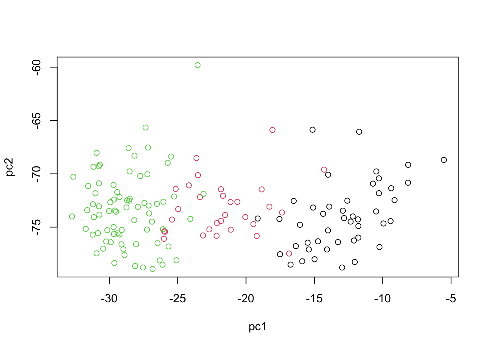
Bayesian Principal Component Analysis (BPCA)
In the traditional Probabilistic Principal Component Analysis (PPCA), we made certain probabilistic assumptions, specifically over the latent variables \(Z\) and the noise term \(\epsilon\). The other parameters were treated as non-probabilistic. However, in BPCA, we take a step further by assuming a probabilistic distribution over all the parameters. This provides a more comprehensive probabilistic model.
Given the linear relationship: \[ \mathbf{x}_n = \mathbf{W}\mathbf{z}_n + \boldsymbol{\epsilon}_n \]
In BPCA, we make the following probabilistic assumptions:
The latent variables \(\mathbf z\) follow a standard normal distribution: \[ \mathbf z \sim \mathcal{N}(0, 1) \]
The weight matrix \(\mathbf{W}\) also follows a standard normal distribution: \[ \mathbf{W} \sim \mathcal{N}(0, 1) \] Both the latent variables and the weight matrix are assumed to follow standard normal distributions. This assumption is in line with the traditional PCA where the principal components are orthogonal and typically standardized to have unit variance. The normal distribution assumption implies that the values of the latent variables and weights are most likely to be around their means (which is zero) and decrease in likelihood as they move away from the mean.
The precision parameter \(\tau\) follows a gamma distribution with parameters \(\alpha_0\) and \(\beta_0\): \[ \tau \sim \mathcal{G}(\alpha_0, \beta_0) \] The gamma distribution is a flexible choice for modeling positive continuous variables like precision. The shape and rate parameters \(\alpha_0\) and \(\beta_0\) can be seen as hyperparameters, and their values can be chosen based on prior knowledge or set in a non-informative manner.
The noise term \(\epsilon_n\) is normally distributed with mean 0 and precision \(\tau^{-1}\): \[ \epsilon_n \sim \mathcal{N}(0, \tau^{-1}) \] This is a common assumption in many statistical models, implying that the errors (or deviations from the model) are symmetrically distributed around zero. The variance of this noise is controlled by the precision parameter \(\tau\).
The observed data \(\mathbf{x}_n\) follows a normal distribution with mean \(\mathbf W\mathbf z_n\) and covariance \(\tau^{-1}\): \[ \mathbf{x}_n \sim \mathcal{N}(\mathbf W\mathbf z_n, \tau^{-1} \mathbf ) \] The choice of a normal distribution here signifies that the observed data points are most likely to lie close to the subspace spanned by the principal components and deviations from this subspace are captured by the noise term.
One of the main advantages of BPCA over traditional PCA is that it provides a probabilistic framework, allowing us to quantify the uncertainties associated with the estimated parameters. In addition, BPCA can automatically determine the number of relevant principal components, unlike traditional PCA where the number of components needs to be specified or chosen.
In BPCA, our primary parameters of interest are the latent variables \(\mathbf{z}\), the weight matrix \(\mathbf{W}\), the precision parameter \(\tau\), and the noise term \(\epsilon_n\). Bayesian inference provides a good way to estimate these parameters, but exact inference can be computationally difficult, especially in high-dimensional setting This is where we can use algorithms like Variational Inference (VI) or MCMC (Markov Chain Monte Carlo) to simplify the problem. We are going to use Variational Inference here. This is an approximate inference technique that turns the inference problem into an optimization problem. The idea is to approximate the true posterior distribution of the parameters with a simpler, factorized distribution, referred to as the “mean-field” approximation.
We are going to assume that the approximate posterior factorizes across all the parameters, i.e., \[q(\mathbf{z}, \mathbf{W}, \tau, \epsilon_n) = q(\mathbf{z})q(\mathbf{W})q(\tau)q(\epsilon_n)\]
The goal here is to minimize the KL divergence between the approximate posterior and the true posterior. This is equivalent to maximizing the Evidence Lower BOund (ELBO), which provides a lower bound to the log marginal likelihood of the data. Using an iterative algorithm, we adjust the parameters of our mean-field distribution to maximize the ELBO. Common techniques include coordinate ascent or gradient-based methods can be used. Once the ELBO is maximized, the parameters of the factorized distributions give us the approximate posterior means and variances for \(\mathbf{z}\), \(\mathbf{W}\), \(\tau\), and \(\epsilon_n\). We can then use the estimated parameters to generate new data points, reconstruct the original data with reduced dimensions, or project new observations onto the principal components, thereby facilitating visualization, clustering, etc.
R provides an excellent interface to Stan through the “rstan” package, allowing users to build, fit, and interrogate complex Bayesian models with ease. We are going to use rstan here. You can run the script if you have succesfully installed rstan otherwise you can skip running the scripts
# Load necessary libraries
require(rstan)
# Configure rstan options
rstan_options(auto_write = FALSE)
# Set the number of cores for parallel processing
options(mc.cores = parallel::detectCores())
# Define the BPCA model in Stan language
bpca <- "
data {
int<lower=0> N; // Number of samples
int<lower=0> D; // The original dimension
int<lower=0> K; // The latent dimension
matrix[N, D] X; // The data matrix
}
parameters {
matrix[N, K] Z; // The latent matrix
matrix[D, K] W; // The weight matrix
real<lower=0> tau; // Noise term
}
transformed parameters{
real<lower=0> t_tau; // Transformed precision term for noise
t_tau = inv(sqrt(tau)); // Compute the inverse of the square root of tau
}
model {
// Prior distributions for the latent matrix and weight matrix
to_vector(Z) ~ normal(0,1);
to_vector(W)~ normal(0, 1);
// Prior distribution for the noise precision term
tau ~ gamma(1,1);
// Likelihood for the observed data
to_vector(X) ~ normal(to_vector(Z*W'), t_tau);
}"
# Compile the Stan model
bpca_model <- stan_model(model_code = bpca)
# Load and preprocess the breast cancer dataset
X <- scale(breast.TCGA$data.train$mrna,scale = T,center = T)
# Prepare the data for Stan
data_input <- list(N = dim(X)[1], D = dim(X)[2], K = 2, X = X)
# Set random seed for reproducibility
set.seed(200)
# Fit the BPCA model using Variational Bayes with the meanfield algorithm
bpca_fit <- vb(bpca_model, data = data_input, algorithm = "meanfield", iter = 1000, output_samples = 100)Chain 1: ------------------------------------------------------------
Chain 1: EXPERIMENTAL ALGORITHM:
Chain 1: This procedure has not been thoroughly tested and may be unstable
Chain 1: or buggy. The interface is subject to change.
Chain 1: ------------------------------------------------------------
Chain 1:
Chain 1:
Chain 1:
Chain 1: Gradient evaluation took 0.001886 seconds
Chain 1: 1000 transitions using 10 leapfrog steps per transition would take 18.86 seconds.
Chain 1: Adjust your expectations accordingly!
Chain 1:
Chain 1:
Chain 1: Begin eta adaptation.
Chain 1: Iteration: 1 / 250 [ 0%] (Adaptation)
Chain 1: Iteration: 50 / 250 [ 20%] (Adaptation)
Chain 1: Iteration: 100 / 250 [ 40%] (Adaptation)
Chain 1: Iteration: 150 / 250 [ 60%] (Adaptation)
Chain 1: Iteration: 200 / 250 [ 80%] (Adaptation)
Chain 1: Success! Found best value [eta = 1] earlier than expected.
Chain 1:
Chain 1: Begin stochastic gradient ascent.
Chain 1: iter ELBO delta_ELBO_mean delta_ELBO_med notes
Chain 1: 100 -40058.050 1.000 1.000
Chain 1: 200 -38590.189 0.519 1.000
Chain 1: 300 -38538.645 0.020 0.038
Chain 1: 400 -38530.234 0.001 0.001 MEAN ELBO CONVERGED MEDIAN ELBO CONVERGED
Chain 1:
Chain 1: Drawing a sample of size 100 from the approximate posterior...
Chain 1: COMPLETED.# Extract the latent scores from the fit
scores <- apply(extract(bpca_fit,"Z")[[1]], c(2,3), mean)
# Plot the latent scores with colors representing subtypes
plot(scores,xlab="pc1",ylab="pc2",col=breast.TCGA$data.train$subtype)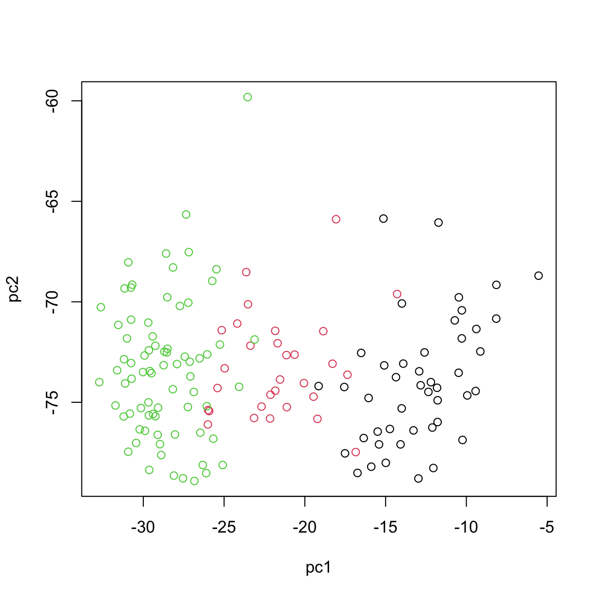
The Stan code here is structured into four main sections, each serving a purpose in the Bayesian modeling framework. The data section declares the observed data and its dimensions, specifying the number of samples (N), the original data dimension (D), the latent dimension (K), and the actual data matrix (X). The parameters section introduces the model’s primary unknowns: the latent matrix (Z) that captures the underlying structure, the weight matrix (W) that maps latent variables to the observed space, and the noise precision parameter (tau). In the transformed parameters section, we computed a derived parameter, t_tau as the inverse of the square root of tau, offering a transformed precision term for the noise. Finally, the model section defines the probabilistic relationships in the model. Here, prior distributions are set for the latent matrix, weight matrix, and noise precision term, while the likelihood of the observed data is defined based on the latent scores, weight matrix, and the transformed noise precision.
The rest of the code essentially just compile the Stan code, prepare the data and run the inference. Probably one of the trickiest part of the code is apply(extract(bpca_fit,"Z")[[1]], c(2,3), mean). Can you guess what does this do?
If you remember, in the context of Bayesian analysis, we don’t deal with point estimate but we have a complete distribution over the parameters of interest. As the consequence we don’t have a single PCA score (PC) for each data point but rather we have a complete distribution. we chose to draw 100 samples (output_samples) from this distribution so we have for each data point 100 scores. I just took the average but we could take any of them or plot the complete distribution.
We have now implemented a complete Bayesian PCA in R and Stan. Time to move towards integration using two data views only.
Canonical Correlation Analysis CCA (two datasets)
Canonical Correlation Analysis (CCA) is similar to PCA with the capability to analyze multivariate correlations between two datasets. While PCA focuses on maximizing variance within a single dataset, CCA identifies linear combinations of variables from two datasets that are maximally correlated. It provides pairs of canonical variables and their associated canonical correlations, giving insights into the shared structure and relationships between datasets. This is particularly suited in multi-omics studies, where understanding the interplay between different types of biological data is crucial.
Mathematical Foundations
CCA seeks to find pairs of linear combinations, one from each dataset, that are maximally correlated. If we have two datasets \(X\) and \(Y\), the canonical correlations are obtained by solving the optimization problem:
\[ \max_{a, b} \rho = \text{corr}(a^T X, b^T Y) \]
where \(a\) and \(b\) are the canonical weights, and \(\rho\) is the canonical correlation.
The cross-covariance matrix between \(X\) and \(Y\) plays a central role in calculating CCA weights. We compute it and then apply SVD to find the weights and correlations. The process is similar to performing SVD in PCA but extends to exploring relationships between two datasets.
\[ \text{SVD}(\Sigma_{XY}) = U \Lambda V^T \]
where \(\Sigma_{XY}\) is the cross-covariance matrix, \(U\) and \(V\) are the canonical weights for \(X\) and \(Y\), and \(\Lambda\) contains the canonical correlations.
We can now find the canonical variables:
\[ T_x = XU \] \[ T_y = YV \]
After finding the first pair, we use a deflation process to remove their effect and proceed to find the next pair. This iterative process continues until we extract the desired number of canonical variable pairs.
\[ X = X-T_x(X^TT_U(T^T_UT_U)^{-1})^T \] and for \(Y\)
\[ Y = Y-T_y(Y^TT_U(T^T_UT_U)^{-1})^T \] The process is repeated to extract additional pairs of canonical variables.
Let’s have a look at how we can derive this in R using miRNA and mRNA data
# center both of the datasets
X_centered <- scale(breast.TCGA$data.train$mrna, scale = FALSE)
Y_centered <- scale(breast.TCGA$data.train$protein, scale = FALSE)
# calculate cross-covariance matrix
cross_cov <- t(X_centered)%*%Y_centered
# do a svd (single eigenvector) this is going to give us a signle CCA component
svd_result <- svd(cross_cov,1,1)
# extract the vectors
U <- svd_result$u
V <- svd_result$v
# calculate the first canonical vectors (the most correlated latent factors)
canonical_vars_X <- X_centered %*% U
canonical_vars_Y <- Y_centered %*% V
# deflate the original matrices
X_centered <- X_centered - canonical_vars_X %*% t((t(X_centered)%*%(canonical_vars_X)%*%solve(t(canonical_vars_X)%*%(canonical_vars_X))))
Y_centered <- Y_centered - canonical_vars_Y %*%
t(t(Y_centered)%*%(canonical_vars_Y)%*%solve(t(canonical_vars_Y)%*%(canonical_vars_Y)))
# redo the svd for the second component
cross_cov <- t(X_centered)%*%Y_centered
svd_result <- svd(cross_cov,1,1)
U <- svd_result$u
V <- svd_result$v
# calculate the second canonical vectors (the second most correlated latent factors)
canonical_vars_X2 <- X_centered %*% U
canonical_vars_Y2 <- Y_centered %*% V
par(mfrow=c(2,2))
plot(canonical_vars_X,canonical_vars_X2,col=breast.TCGA$data.train$subtype,xlab="l1",ylab="l2",main="CCA protein")
plot(canonical_vars_Y,canonical_vars_Y2,col=breast.TCGA$data.train$subtype,xlab="l1",ylab="l2",main="CCA protein")
plot(canonical_vars_X,canonical_vars_Y,col=breast.TCGA$data.train$subtype,xlab="mRNA",ylab="protein",main="l1")
plot(canonical_vars_X2,canonical_vars_Y2,col=breast.TCGA$data.train$subtype,xlab="mRNA",ylab="protein",main="l2")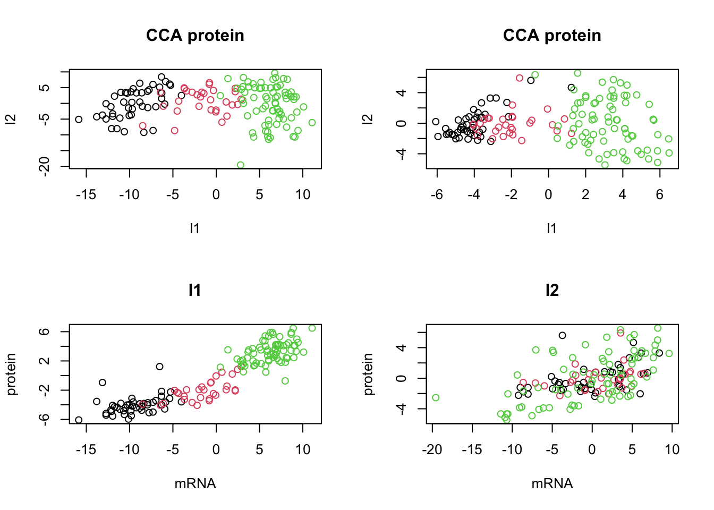
The plot above clearly shows that we ended up having a shared pattern in l1 (first CCA component). L1 captures the primary mode of correlation between protein and mRNA expression data. It represents the linear combinations of protein and mRNAs that are most strongly correlated. Since our interest right now is in the suptypes, we can probably ignore the second latent factor but we might as well try to explaining based on some other factors.
In the context of CCA, loadings play a role similar to that in PCA, yet they have a distinct interpretation. Similar to PCA, where loadings indicate the contribution of each original variable to the principal components, in CCA, the loadings show the contribution of each variable to the canonical variables. However, the difference lies in their meaning. While PCA loadings represent the contribution to the variance within a single dataset, CCA loadings show the contribution to the correlation between two datasets.
Bayesian Canonical Correlation Analysis (BCCA)
The idea of Bayesian Canonical Correlation Analysis (BCCA) is simple. Recall that in BPCA we had \(X = ZW^T + \epsilon\) in CCA however we have two data views (\(X\) and \(Y\)) that we are after a shared latent factor for them. So we can rewrite our BPCA equations:
\[X = ZW_x^T + \epsilon_x\] \[Y = ZW_y^T + \epsilon_y\]
If you look a the equation we can see we have a shared latent factor (\(Z\)) but weights and noise are different across the dataset. So our latent factor \(Z\) is going to capture the shared pattern using a global score and in addition the weights can be used to project the original data into data view specific scores.
In BCCA also: 1. The latent variables \(\mathbf z\) follow a standard normal distribution: \[ \mathbf z \sim \mathcal{N}(0, 1) \] 2. The weight matrix for both datasets \(\mathbf{W_{x,y}}\) also follows a standard normal distribution: \[ \mathbf{W_{x,y}} \sim \mathcal{N}(0, 1) \]
The precision parameter \(\tau_{x,y}\) follows a gamma distribution with parameters \(\alpha_0\) and \(\beta_0\): \[ \tau \sim \mathcal{G}(\alpha_0, \beta_0) \]
The noise term \(\epsilon_n\) is also normally distributed for both dataset with mean 0 and precision \(\tau^{-1}\): \[ \epsilon_n \sim \mathcal{N}(0, \tau^{-1}) \]
The observed data \(\mathbf{x}_n\) and \(\mathbf{y}_n\) follows a normal distribution with mean \(\mathbf W_x\mathbf z_n\) and \(\mathbf W_y\mathbf z_n\) and covariance \(\tau_{x,y}^{-1}\) so \[ \mathbf{x}_n \sim \mathcal{N}(\mathbf W_x\mathbf z_n, \tau_x^{-1} \mathbf ) \] and \[ \mathbf{y}_n \sim \mathcal{N}(\mathbf W_y\mathbf z_n, \tau_y^{-1} \mathbf ) \].
The rest of the optimization etc are similar to those of BPCA. Let’s try to implement this:
# Load the rstan library for Bayesian analysis using Stan
require(rstan)
# Set rstan options for automatic caching and multi-core processing
rstan_options(auto_write = FALSE)
options(mc.cores = parallel::detectCores())
# Fix the random seed for reproducibility
set.seed(100)
# Define the Canonical Correlation Analysis (CCA) model in Stan language
cca2 <- "
data {
int<lower=0> N; // Number of samples
int<lower=0> D1; // The original dimension
int<lower=0> D2; // The original dimension
int<lower=0> K; // The latent dimension
matrix[N, D1] X1; // The data matrix
matrix[N, D2] X2; // The data matrix
}
parameters {
matrix[N, K] Z; // The latent matrix
matrix[D1, K] W1; // The weight matrix
matrix[D2, K] W2; // The weight matrix
real<lower=0> tau1; // Noise term
real<lower=0> tau2; // Noise term
}
transformed parameters{
real<lower=0> t_tau1;
t_tau1 = inv(sqrt(tau1));
real<lower=0> t_tau2;
t_tau2 = inv(sqrt(tau2));
}
model {
tau1 ~ gamma(1,1);
tau2 ~ gamma(1,1);
to_vector(Z) ~ normal(0,1);
to_vector(W1)~ normal(0, 1);
to_vector(W2)~ normal(0, 1);
to_vector(X1) ~ normal(to_vector(Z*W1'), t_tau1);
to_vector(X2) ~ normal(to_vector(Z*W2'), t_tau2);
}"
# Compile the Stan model for CCA
cca_model <- stan_model(model_code = cca2)
# Load and preprocess the breast cancer mRNA and protein datasets
X1 <- scale(breast.TCGA$data.train$mrna,scale = F,center = T)
Y <- scale(breast.TCGA$data.train$protein,scale = F,center = T)
# Prepare the data for the Stan model
data <- list(N = dim(X)[1], D1 = dim(X)[2], K = 2, X1 = X1, X2 = Y, D2 = dim(Y)[2])
# Set another random seed for reproducibility in the inference step
set.seed(200)
# Fit the CCA model using Variational Bayes with the meanfield algorithm
cca_fit <- vb(cca_model, data = data, algorithm = "meanfield", iter = 1000, output_samples = 100)Chain 1: ------------------------------------------------------------
Chain 1: EXPERIMENTAL ALGORITHM:
Chain 1: This procedure has not been thoroughly tested and may be unstable
Chain 1: or buggy. The interface is subject to change.
Chain 1: ------------------------------------------------------------
Chain 1:
Chain 1:
Chain 1:
Chain 1: Gradient evaluation took 0.00208 seconds
Chain 1: 1000 transitions using 10 leapfrog steps per transition would take 20.8 seconds.
Chain 1: Adjust your expectations accordingly!
Chain 1:
Chain 1:
Chain 1: Begin eta adaptation.
Chain 1: Iteration: 1 / 250 [ 0%] (Adaptation)
Chain 1: Iteration: 50 / 250 [ 20%] (Adaptation)
Chain 1: Iteration: 100 / 250 [ 40%] (Adaptation)
Chain 1: Iteration: 150 / 250 [ 60%] (Adaptation)
Chain 1: Iteration: 200 / 250 [ 80%] (Adaptation)
Chain 1: Success! Found best value [eta = 1] earlier than expected.
Chain 1:
Chain 1: Begin stochastic gradient ascent.
Chain 1: iter ELBO delta_ELBO_mean delta_ELBO_med notes
Chain 1: 100 -60643.836 1.000 1.000
Chain 1: 200 -59084.380 0.513 1.000
Chain 1: 300 -58991.764 0.014 0.026
Chain 1: 400 -58978.129 0.001 0.002 MEAN ELBO CONVERGED MEDIAN ELBO CONVERGED
Chain 1:
Chain 1: Drawing a sample of size 100 from the approximate posterior...
Chain 1: COMPLETED.Warning: Pareto k diagnostic value is 4.98. Resampling is disabled. Decreasing
tol_rel_obj may help if variational algorithm has terminated prematurely.
Otherwise consider using sampling instead.# Extract and compute the average latent scores from the fit for global, mRNA, and protein data
scores_global <- apply(extract(cca_fit,"Z")[[1]], c(2,3), mean)
scores_x <- X1%*% apply(extract(cca_fit,"W1")[[1]], c(2,3), mean)
scores_y <- Y%*% apply(extract(cca_fit,"W2")[[1]], c(2,3), mean)
# Plot the latent scores for mRNA, protein, and global datasets in a 2x2 grid layout
par(mfrow=c(2,2))
plot(scores_x, col=breast.TCGA$data.train$subtype, main="BCCA mRNA", xlab="L1", ylab="L2")
plot(scores_y, col=breast.TCGA$data.train$subtype, main="BCCA protein", xlab="L1", ylab="L2")
plot(scores_global, col=breast.TCGA$data.train$subtype, main="BCCA global", xlab="L1", ylab="L2")
Based on the scores, can we say if we have captured shared pattern between our datasets? do A PCA on each of the datasets and comapre the results with what we got here
Group Factor Analysis (GFA) Multi-Omics Factor Analysis (MOFA)
Group Factor Analysis (GFA) is simply the extension of CCA to more than two data views. Remember that in BCCA we had \(X = ZW_x^T + \epsilon_x\) and \(Y = ZW_y^T + \epsilon_y\) in which \(Z\) was the common factor. In Group Factor Analysis (GFA), the idea is expanded to accommodate multiple data views, not just two as in CCA. In BCCA, we have the two data views represented by the equations \(X = ZW_x^T + \epsilon_x\) and \(Y = ZW_y^T + \epsilon_y\), where \(Z\) is the common latent factor, \(W_x\) and \(W_y\) are the loading matrices for \(X\) and \(Y\) respectively, and \(\epsilon_x\) and \(\epsilon_y\) are the noise terms.
In GFA, for multiple data views \(V_1, V_2, ..., V_k\), the model can be written as:
\[ V_i = ZW_i^T + \epsilon_i \]
for \(i = 1, 2, ..., k\), where:
- \(V_i\) represents the \(i^{th}\) data view.
- \(Z\) is the shared common latent factor across all views.
- \(W_i\) is the loading matrix for the \(i^{th}\) data view.
- \(\epsilon_i\) is the noise term for the \(i^{th}\) data view.
The objective of GFA is to find the common latent factor \(Z\) and the individual loading matrices \(W_i\) that best explain the variance in each of the data views while also capturing the shared information across all views.
The rest of the equations and optimization is identical to those of BCCA. So given the new definition let’s try to implement GFA in R using three data modalities (mRNA,protein and miRNA):
# Fix the random seed for reproducibility
set.seed(100)
# Define GFA
gfa <- "
data {
int<lower=1> N; // Number of data points
int<lower=1> K; // Dimensionality of latent space
int<lower=1> M; // Number of modalities
int<lower=1> SumP; // Total number of features across all modalities
int<lower=1> P[M]; // Number of features for each modality
matrix[N, SumP] x; // Concatenated data
}
parameters {
matrix[K, SumP] W; // Factor loading matrix
vector<lower=0>[M] tau; // Precision for each modality
matrix[N, K] z; // Latent variables
matrix<lower=0>[M,K] alpha; // View-specific ARD prior
}
transformed parameters{
vector<lower=0>[M] t_tau;
t_tau = inv(sqrt(tau));
}
model {
// fix z first
to_vector(z) ~ normal(0,1);
tau ~ gamma(1, 1);
// Priors
int start;
start = 0;
for (m in 1:M) {
for (d in 1:P[m]) {
start = start + 1;
W[,start] ~ normal(0,1);
x[,start] ~ normal(z*W[,start], t_tau[m]);
}
}
}
"
gfa_model <- stan_model(model_code = gfa)
# Load and preprocess the breast cancer mRNA, mirna and protein datasets
X1 <- scale(breast.TCGA$data.train$mrna,scale = F,center = T)
X2 <- scale(breast.TCGA$data.train$protein,scale = F,center = T)
X3 <- scale(breast.TCGA$data.train$mirna,scale = F,center = T)
# prepare the list
matrices_list <- list(
X1,
X2,
X3
)
combined_data <- do.call(cbind,matrices_list)
# Prepare the data for the Stan model
stan_data <- list(
N = sapply(matrices_list, nrow)[1],
K = 2,
P = sapply(matrices_list, ncol),
M = length(matrices_list),
x = combined_data,
SumP = ncol(combined_data)
)
# Set another random seed for reproducibility in the inference step
set.seed(2000)
# Fit the GFA model using Variational Bayes with the meanfield algorithm
gfa_fit <- vb(gfa_model, data = stan_data, algorithm = "meanfield", iter = 1000, output_samples = 100)Chain 1: ------------------------------------------------------------
Chain 1: EXPERIMENTAL ALGORITHM:
Chain 1: This procedure has not been thoroughly tested and may be unstable
Chain 1: or buggy. The interface is subject to change.
Chain 1: ------------------------------------------------------------
Chain 1:
Chain 1:
Chain 1:
Chain 1: Gradient evaluation took 0.006892 seconds
Chain 1: 1000 transitions using 10 leapfrog steps per transition would take 68.92 seconds.
Chain 1: Adjust your expectations accordingly!
Chain 1:
Chain 1:
Chain 1: Begin eta adaptation.
Chain 1: Iteration: 1 / 250 [ 0%] (Adaptation)
Chain 1: Iteration: 50 / 250 [ 20%] (Adaptation)
Chain 1: Iteration: 100 / 250 [ 40%] (Adaptation)
Chain 1: Iteration: 150 / 250 [ 60%] (Adaptation)
Chain 1: Iteration: 200 / 250 [ 80%] (Adaptation)
Chain 1: Success! Found best value [eta = 1] earlier than expected.
Chain 1:
Chain 1: Begin stochastic gradient ascent.
Chain 1: iter ELBO delta_ELBO_mean delta_ELBO_med notes
Chain 1: 100 -99211.110 1.000 1.000
Chain 1: 200 -97573.911 0.508 1.000
Chain 1: 300 -97485.188 0.009 0.017 MEAN ELBO CONVERGED
Chain 1:
Chain 1: Drawing a sample of size 100 from the approximate posterior...
Chain 1: COMPLETED.Warning: Pareto k diagnostic value is 26.79. Resampling is disabled. Decreasing
tol_rel_obj may help if variational algorithm has terminated prematurely.
Otherwise consider using sampling instead.# Extract and compute the average latent scores from the fit for global, mRNA, and protein data
scores_global <- apply(extract(gfa_fit,"z")[[1]], c(2,3), mean)
W_mean <-apply(extract(gfa_fit,"W")[[1]], c(2,3), mean)
W_mean_no_sparse<-W_mean
# Separate W_mean based on modalities
W_list <- list()
start_col <- 1
for(m in 1:stan_data$M) {
end_col <- start_col + stan_data$P[m] - 1
W_list[[m]] <- W_mean[, start_col:end_col]
start_col <- end_col + 1
}
scores <- mapply(function(x,y){list(x%*%t(y))},x=matrices_list,y=W_list)
# Plot the latent scores for mRNA, protein, and global datasets in a 2x2 grid layout
par(mfrow=c(2,2))
plot(scores[[1]], col=breast.TCGA$data.train$subtype, main="GFA mRNA", xlab="L1", ylab="L2")
plot(scores[[2]], col=breast.TCGA$data.train$subtype, main="GFA protein", xlab="L1", ylab="L2")
plot(scores[[3]], col=breast.TCGA$data.train$subtype, main="GFA miRNA", xlab="L1", ylab="L2")
plot(scores_global, col=breast.TCGA$data.train$subtype, main="GFA global", xlab="L1", ylab="L2")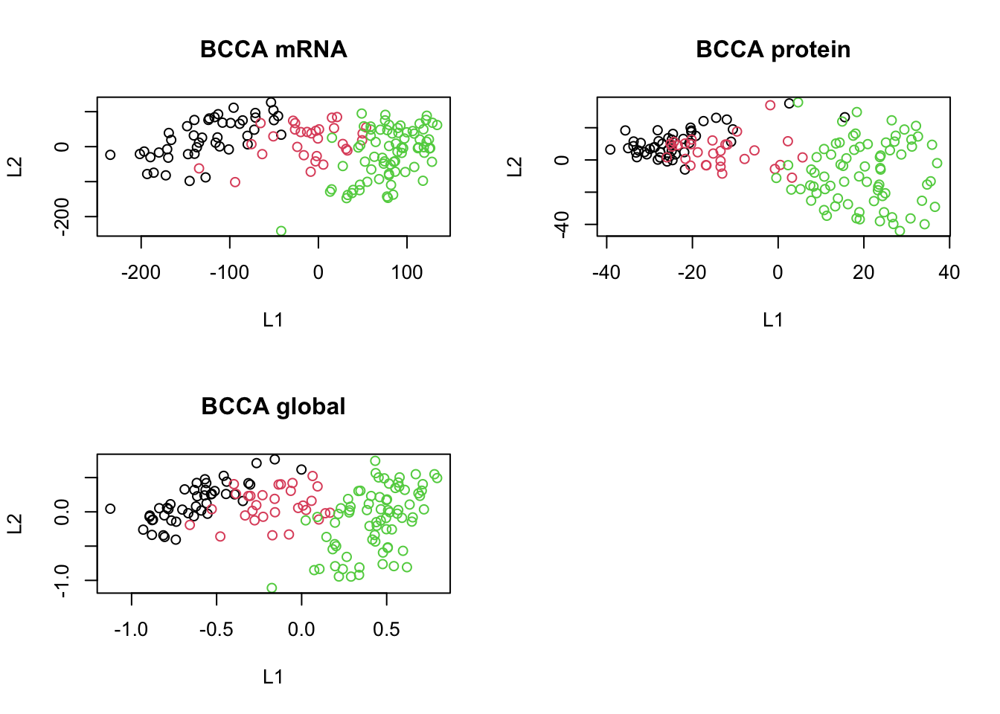
In the code above, since Stan does not support ragged data structures (data structures with different lengths), we had to concatenate the data first, but then instruct Rstan to put different assumptions on different columns of the data depending on which modality it originates from.
The results are more or less clear; we have captured the shared pattern across these three datasets.
One more thing before talking about MOFA is that we have been omitting sparsity considerations in our model. Sparsity plays a crucial role in high-dimensional data analysis, ensuring that the model remains interpretable and avoids overfitting. Two popular approaches to incorporate sparsity are Automatic Relevance Determination (ARD) and the Spike-and-slab prior.
ARD is a form of Bayesian regularization where each feature is assigned its own regularization coefficient, allowing the model to effectively “turn off” irrelevant features by pushing their coefficients towards zero. This results in a more interpretable model where only the most relevant features contribute to the outcome. Mathematically, this can be represented as: \[p(\mathbf{W}|\boldsymbol{\alpha}) = \prod_{k=1}^{K} N(\mathbf{w}_{:,k};0,\frac{1}{\alpha_{k}}I_{D})\] \[p(\boldsymbol{\alpha}) = \prod_{k=1}^{K} \mathcal{G}(\alpha_k; a_0^\alpha, b_0^\alpha)\] where \(W\) is the weight matrix and \(\alpha\) represents the precision of the weights. The Gamma distribution shapes the hyperparameters \(\boldsymbol{\alpha}\), capturing the uncertainty associated with the inverse variance of the weights.
On the other hand, the Spike-and-slab prior combines two distributions: a spike at zero, representing the probability that a coefficient is exactly zero, and a slab, a continuous distribution reflecting the possible non-zero values of the coefficient. This mixture allows for both exact zeros and non-zero coefficients, making it a powerful tool for variable selection in high-dimensional settings. The prior can be represented as: \[p(w_{d,k} | \alpha_k,\theta_k) = (1-\theta_k) \delta_0(w_{d,k}) + \theta_k N(w_{d,k};0, \alpha_k^{-1})\] \[p(\theta_k) = \mathcal{B}(\theta_k; a_0^\theta,b_0^\theta)\] \[p(\alpha_k) = \mathcal{G}(\alpha_k; a_0^\alpha, b_0^\alpha)\]
Here, the Beta distribution is utilized for modeling the hyperparameter \(\theta_k\), indicating the probability that a weight is non-zero. As the Beta distribution is defined between [0, 1], it’s a good fit for modeling probabilities.
Let’s try to incorporate these in the model.
# Fix the random seed for reproducibility
set.seed(100)
gfa_sparse <- "
data {
int<lower=1> N; // Number of data points
int<lower=1> K; // Dimensionality of latent space
int<lower=1> M; // Number of modalities
int<lower=1> SumP; // Total number of features across all modalities
int<lower=1> P[M]; // Number of features for each modality
matrix[N, SumP] x; // Concatenated data
real a0_theta; // Hyperparameter for Beta prior
real b0_theta; // Hyperparameter for Beta prior
}
parameters {
matrix[K, SumP] W; // Factor loading matrix
vector<lower=0>[M] tau; // Precision for each modality
matrix[N, K] z; // Latent variables
matrix<lower=0>[M,K] alpha; // View-specific ARD prior
matrix<lower=0, upper=1>[K, SumP] theta; // Spike-and-slab mixing proportion
}
transformed parameters{
vector<lower=0>[M] t_tau;
t_tau = inv(sqrt(tau));
matrix<lower=0>[M,K] t_alpha;
t_alpha = inv(sqrt(alpha));
}
model {
// fix z first
to_vector(z) ~ normal(0,1);
tau ~ gamma(1, 1);
to_vector(alpha) ~ gamma(1e-2,1e-2);
// add aph
// Priors
// Incorporating the ARD and spike-and-slab priors
int start;
start = 0;
for (m in 1:M) {
for (d in 1:P[m]) {
start = start + 1;
// Spike-and-slab prior
for (k in 1:K) {
theta[k,start] ~ beta(a0_theta, b0_theta);
target += log_mix(theta[k, start],
normal_lpdf(W[k,start] | 0, t_alpha[m,k]),normal_lpdf(W[k,start] | 0, 1e-14));
}
// Data likelihood
x[,start] ~ normal(z*W[,start], t_tau[m]);
}
}
}
"
gfa_model <- stan_model(model_code = gfa_sparse)
# Load and preprocess the breast cancer mRNA and protein datasets
X1 <- scale(breast.TCGA$data.train$mrna,scale = F,center = T)
X2 <- scale(breast.TCGA$data.train$protein,scale = F,center = T)
X3 <- scale(breast.TCGA$data.train$mirna,scale = F,center = T)
# prepare the list
matrices_list <- list(
X1,
X2,
X3
)
combined_data <- do.call(cbind,matrices_list)
# Prepare the data for the Stan model
stan_data <- list(
N = sapply(matrices_list, nrow)[1],
K = 2,
P = sapply(matrices_list, ncol),
M = length(matrices_list),
x = combined_data,
SumP = ncol(combined_data),
a0_theta=1,
b0_theta=1
)
# Set another random seed for reproducibility in the inference step
set.seed(200)
# Fit the GFA model using Variational Bayes with the meanfield algorithm
gfa_fit <- vb(gfa_model, data = stan_data, algorithm = "meanfield", iter = 1000, output_samples = 100)Chain 1: ------------------------------------------------------------
Chain 1: EXPERIMENTAL ALGORITHM:
Chain 1: This procedure has not been thoroughly tested and may be unstable
Chain 1: or buggy. The interface is subject to change.
Chain 1: ------------------------------------------------------------
Chain 1:
Chain 1:
Chain 1:
Chain 1: Gradient evaluation took 0.007134 seconds
Chain 1: 1000 transitions using 10 leapfrog steps per transition would take 71.34 seconds.
Chain 1: Adjust your expectations accordingly!
Chain 1:
Chain 1:
Chain 1: Begin eta adaptation.
Chain 1: Iteration: 1 / 250 [ 0%] (Adaptation)
Chain 1: Iteration: 50 / 250 [ 20%] (Adaptation)
Chain 1: Iteration: 100 / 250 [ 40%] (Adaptation)
Chain 1: Iteration: 150 / 250 [ 60%] (Adaptation)
Chain 1: Iteration: 200 / 250 [ 80%] (Adaptation)
Chain 1: Success! Found best value [eta = 1] earlier than expected.
Chain 1:
Chain 1: Begin stochastic gradient ascent.
Chain 1: iter ELBO delta_ELBO_mean delta_ELBO_med notes
Chain 1: 100 -104607.753 1.000 1.000
Chain 1: 200 -98371.919 0.532 1.000
Chain 1: 300 -98212.222 0.033 0.063
Chain 1: 400 -98172.998 0.001 0.002 MEAN ELBO CONVERGED MEDIAN ELBO CONVERGED
Chain 1:
Chain 1: Drawing a sample of size 100 from the approximate posterior...
Chain 1: COMPLETED.Warning: Pareto k diagnostic value is 6.26. Resampling is disabled. Decreasing
tol_rel_obj may help if variational algorithm has terminated prematurely.
Otherwise consider using sampling instead.# Extract and compute the average latent scores from the fit for global, mRNA, protein, and miRNA data
scores_global <- apply(extract(gfa_fit,"z")[[1]], c(2,3), mean)
W_mean <-apply(extract(gfa_fit,"W")[[1]], c(2,3), mean)
# Separate W_mean based on modalities
W_list <- list()
start_col <- 1
for(m in 1:stan_data$M) {
end_col <- start_col + stan_data$P[m] - 1
W_list[[m]] <- W_mean[, start_col:end_col]
start_col <- end_col + 1
}
# calculate block scores
scores <- mapply(function(x,y){list(x%*%t(y))},x=matrices_list,y=W_list)
# Plot the latent scores for mRNA, protein, and global datasets in a 2x2 grid layout
par(mfrow=c(2,2))
plot(scores[[1]], col=breast.TCGA$data.train$subtype, main="GFA mRNA", xlab="L1", ylab="L2")
plot(scores[[2]], col=breast.TCGA$data.train$subtype, main="GFA protein", xlab="L1", ylab="L2")
plot(scores[[3]], col=breast.TCGA$data.train$subtype, main="GFA miRNA", xlab="L1", ylab="L2")
plot(scores_global, col=breast.TCGA$data.train$subtype, main="GFA global", xlab="L1", ylab="L2")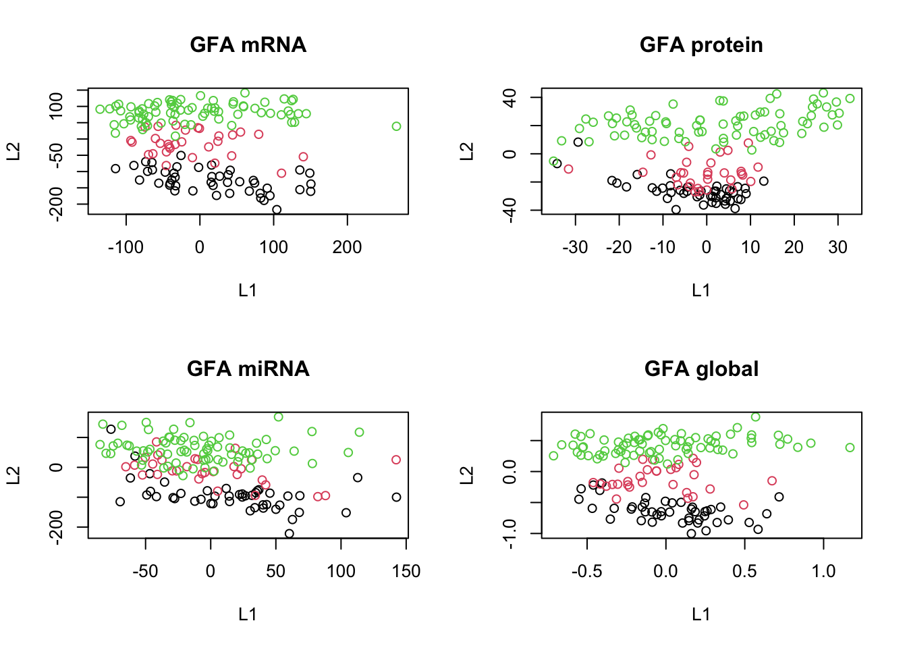
The above code computes the log of a mixture of two distributions. In the context of the spike-and-slab prior, this function is used to represent the spike (a point mass at zero) and the slab (a continuous distribution) for the weights. As said, the idea is to combine a “spike” (a point mass at zero, promoting sparsity) with a “slab” (a continuous distribution allowing for non-zero parameter values). By mixing these two distributions, the prior encourages the parameters to be close to zero (due to the spike) while allowing some to take non-zero values (due to the slab).
In practice however our parametrization might cause problems in inference.
MOFA uses re-parametrization of the weights \(w\) as a product of a Gaussian random variable \(\hat{w}\) and a Bernoulli random variable \(s, 12\), 4] resulting in the following prior:
\[ p\left(\hat{w}_{d, k}^{m}, s_{d, k}^{m}\right)=\mathcal{N}\left(\hat{w}_{d, k}^{m} \mid 0,1 / \alpha_{k}^{m}\right) \operatorname{Ber}\left(s_{d, k}^{m} \mid \theta_{k}^{m}\right) \] with hyper-parameters \(a_{0}^{\theta}, b_{0}^{\theta}=1\) and \(a_{0}^{\alpha}, b_{0}^{\alpha}=1 e^{-14}\) to get uninformative priors. A value of \(\theta_{k}^{m}\) close to 0 implies that most of the weights of factor \(k\) in view \(m\) are shrinked to 0 , which is the definition of a sparse factor. In contrast, a value of \(\theta_{k}^{m}\) close to 1 implies that most of the weights are non-zero, which is the definition of a non-sparse factor.
We cannot directly construct a spike-and-slab prior in Stan since it requires a discrete parameter. We are going to leave it as it is now! So all together with the code above, we have more or less reach the final joint probability of MOFA:
\[ \begin{aligned} p(\mathbf{Y}, \hat{\mathbf{W}}, \mathbf{S}, \mathbf{Z}, \boldsymbol{\Theta}, \boldsymbol{\alpha}, \boldsymbol{\tau})= & \prod_{m=1}^{M} \prod_{n=1}^{N} \prod_{d=1}^{D_{m}} \mathcal{N}\left(y_{n d}^{m} \mid \sum_{k=1}^{K} s_{d k}^{m} \hat{w}_{d k}^{m} z_{n k}, 1 / \tau_{d}\right) \\ & \prod_{m=1}^{M} \prod_{d=1}^{D_{m}} \prod_{k=1}^{K} \mathcal{N}\left(\hat{w}_{d k}^{m} \mid 0,1 / \alpha_{k}^{m}\right) \operatorname{Ber}\left(s_{d, k}^{m} \mid \theta_{k}^{m}\right) \\ & \prod_{n=1}^{N} \prod_{k=1}^{K} \mathcal{N}\left(z_{n k} \mid 0,1\right) \\ & \prod_{m=1}^{M} \prod_{k=1}^{K} \operatorname{Beta}\left(\theta_{k}^{m} \mid a_{0}^{\theta}, b_{0}^{\theta}\right) \\ & \prod_{m=1}^{M} \prod_{k=1}^{K} \mathcal{G}\left(\alpha_{k}^{m} \mid a_{0}^{\alpha}, b_{0}^{\alpha}\right) \\ & \prod_{m=1}^{M} \prod_{d=1}^{D_{m}} \mathcal{G}\left(\tau_{d}^{m} \mid a_{0}^{\tau}, b_{0}^{\tau}\right) . \end{aligned} \]
MOFA follows GFA under the hood but it also allows one to use different priors depending on data distribution and also different levels of sparsity but the general idea is what we got to now. After going through the theory it is time to use MOFA to do data integration.
Data integration using MOFA2
In order to do data integration using MOFA we first have to construct a list of data matrices:
library(MOFA2)
Attaching package: 'MOFA2'The following object is masked from 'package:stats':
predict# remove the subtype information
data_mofa <- breast.TCGA$data.train[-4]
# we do transpose because mofa wants features in rows
data_mofa <- lapply(data_mofa,t)We can then use create_mofa to create a MOFA object:
MOFAobject <- create_mofa(data_mofa)Creating MOFA object from a list of matrices (features as rows, sample as columns)...We can have a look at the structure of the input data:
plot_data_overview(MOFAobject)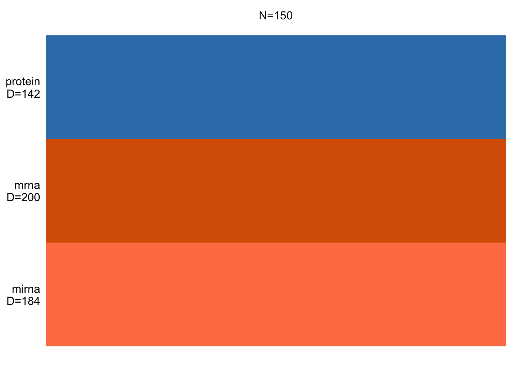
This essentially shows us how many samples we have and how many features per data view is there. If there is missing values it will be shown as white lines. But we don’t have missing values.
Before start modeling we should have a look at the distribution of the data to decide which distrubtion to use.
par(mfrow=c(2,2))
hist(data_mofa$mrna)
hist(data_mofa$protein)
hist(data_mofa$mirna)All of our data is normally distributed so we go for normal distribution. In practice MOFA allows us to select ‘gaussian’ for continuous data (e.g proteomics), ‘bernoulli’ for binary data (e.g. methylation) and ‘poisson’ for count data (e.g. RNA-Seq).
We can now set the parameters and train the model:
model_opts <- get_default_model_options(MOFAobject)
print(model_opts)$likelihoods
mirna mrna protein
"gaussian" "gaussian" "gaussian"
$num_factors
[1] 15
$spikeslab_factors
[1] FALSE
$spikeslab_weights
[1] FALSE
$ard_factors
[1] FALSE
$ard_weights
[1] TRUEWe see that MOFA has select default (gaussian) likelyhood for all our data and include 15 factors (latent variables). It does not do Spike and Slap but ARD is switched on.
Let’s set the number of factors to 10 and continue
model_opts$num_factors <- 10We can now start the training:
MOFAobject <- prepare_mofa(MOFAobject,
model_options = model_opts
)Checking data options...No data options specified, using default...No training options specified, using default...Checking model options...MOFAobject <- invisible(run_mofa(MOFAobject))Warning in run_mofa(MOFAobject): No output filename provided. Using /var/folders/kh/tgq9mmld6_v9z_h220trj0c40000gn/T//RtmptEmLD6/mofa_20231018-185049.hdf5 to store the trained model.Connecting to the mofapy2 python package using reticulate (use_basilisk = FALSE)...
Please make sure to manually specify the right python binary when loading R with reticulate::use_python(..., force=TRUE) or the right conda environment with reticulate::use_condaenv(..., force=TRUE)
If you prefer to let us automatically install a conda environment with 'mofapy2' installed using the 'basilisk' package, please use the argument 'use_basilisk = TRUE'
#########################################################
### __ __ ____ ______ ###
### | \/ |/ __ \| ____/\ _ ###
### | \ / | | | | |__ / \ _| |_ ###
### | |\/| | | | | __/ /\ \_ _| ###
### | | | | |__| | | / ____ \|_| ###
### |_| |_|\____/|_|/_/ \_\ ###
### ###
#########################################################
use_float32 set to True: replacing float64 arrays by float32 arrays to speed up computations...
Successfully loaded view='mirna' group='group1' with N=150 samples and D=184 features...
Successfully loaded view='mrna' group='group1' with N=150 samples and D=200 features...
Successfully loaded view='protein' group='group1' with N=150 samples and D=142 features...
Model options:
- Automatic Relevance Determination prior on the factors: False
- Automatic Relevance Determination prior on the weights: True
- Spike-and-slab prior on the factors: False
- Spike-and-slab prior on the weights: False
Likelihoods:
- View 0 (mirna): gaussian
- View 1 (mrna): gaussian
- View 2 (protein): gaussian
######################################
## Training the model with seed 42 ##
######################################
ELBO before training: -605349.03
Iteration 1: time=0.01, ELBO=-97986.53, deltaELBO=507362.501 (83.81321728%), Factors=10
Iteration 2: time=0.01, Factors=10
Iteration 3: time=0.01, Factors=10
Iteration 4: time=0.01, Factors=10
Iteration 5: time=0.01, Factors=10
Iteration 6: time=0.01, ELBO=-85812.38, deltaELBO=12174.149 (2.01109572%), Factors=10
Iteration 7: time=0.01, Factors=10
Iteration 8: time=0.01, Factors=10
Iteration 9: time=0.01, Factors=10
Iteration 10: time=0.01, Factors=10
Iteration 11: time=0.01, ELBO=-85546.36, deltaELBO=266.029 (0.04394630%), Factors=10
Iteration 12: time=0.00, Factors=10
Iteration 13: time=0.01, Factors=10
Iteration 14: time=0.01, Factors=10
Iteration 15: time=0.01, Factors=10
Iteration 16: time=0.01, ELBO=-85119.86, deltaELBO=426.494 (0.07045427%), Factors=10
Iteration 17: time=0.01, Factors=10
Iteration 18: time=0.01, Factors=10
Iteration 19: time=0.01, Factors=10
Iteration 20: time=0.01, Factors=10
Iteration 21: time=0.01, ELBO=-84663.08, deltaELBO=456.782 (0.07545757%), Factors=10
Iteration 22: time=0.01, Factors=10
Iteration 23: time=0.00, Factors=10
Iteration 24: time=0.00, Factors=10
Iteration 25: time=0.00, Factors=10
Iteration 26: time=0.01, ELBO=-84469.19, deltaELBO=193.894 (0.03203003%), Factors=10
Iteration 27: time=0.01, Factors=10
Iteration 28: time=0.01, Factors=10
Iteration 29: time=0.01, Factors=10
Iteration 30: time=0.00, Factors=10
Iteration 31: time=0.01, ELBO=-84312.91, deltaELBO=156.276 (0.02581593%), Factors=10
Iteration 32: time=0.00, Factors=10
Iteration 33: time=0.00, Factors=10
Iteration 34: time=0.00, Factors=10
Iteration 35: time=0.00, Factors=10
Iteration 36: time=0.01, ELBO=-84211.62, deltaELBO=101.293 (0.01673295%), Factors=10
Iteration 37: time=0.00, Factors=10
Iteration 38: time=0.00, Factors=10
Iteration 39: time=0.00, Factors=10
Iteration 40: time=0.00, Factors=10
Iteration 41: time=0.01, ELBO=-84149.57, deltaELBO=62.049 (0.01025015%), Factors=10
Iteration 42: time=0.01, Factors=10
Iteration 43: time=0.00, Factors=10
Iteration 44: time=0.00, Factors=10
Iteration 45: time=0.00, Factors=10
Iteration 46: time=0.01, ELBO=-84113.44, deltaELBO=36.127 (0.00596801%), Factors=10
Iteration 47: time=0.00, Factors=10
Iteration 48: time=0.00, Factors=10
Iteration 49: time=0.00, Factors=10
Iteration 50: time=0.00, Factors=10
Iteration 51: time=0.01, ELBO=-84094.13, deltaELBO=19.309 (0.00318972%), Factors=10
Iteration 52: time=0.00, Factors=10
Iteration 53: time=0.00, Factors=10
Iteration 54: time=0.00, Factors=10
Iteration 55: time=0.00, Factors=10
Iteration 56: time=0.01, ELBO=-84083.06, deltaELBO=11.072 (0.00182895%), Factors=10
Iteration 57: time=0.00, Factors=10
Iteration 58: time=0.00, Factors=10
Iteration 59: time=0.00, Factors=10
Iteration 60: time=0.01, Factors=10
Iteration 61: time=0.01, ELBO=-84075.87, deltaELBO=7.195 (0.00118855%), Factors=10
Iteration 62: time=0.00, Factors=10
Iteration 63: time=0.00, Factors=10
Iteration 64: time=0.00, Factors=10
Iteration 65: time=0.01, Factors=10
Iteration 66: time=0.01, ELBO=-84070.67, deltaELBO=5.196 (0.00085839%), Factors=10
Iteration 67: time=0.01, Factors=10
Iteration 68: time=0.01, Factors=10
Iteration 69: time=0.01, Factors=10
Iteration 70: time=0.01, Factors=10
Iteration 71: time=0.01, ELBO=-84066.69, deltaELBO=3.981 (0.00065768%), Factors=10
Iteration 72: time=0.01, Factors=10
Iteration 73: time=0.01, Factors=10
Iteration 74: time=0.01, Factors=10
Iteration 75: time=0.01, Factors=10
Iteration 76: time=0.01, ELBO=-84063.53, deltaELBO=3.155 (0.00052122%), Factors=10
Iteration 77: time=0.01, Factors=10
Iteration 78: time=0.01, Factors=10
Iteration 79: time=0.01, Factors=10
Iteration 80: time=0.01, Factors=10
Iteration 81: time=0.01, ELBO=-84060.96, deltaELBO=2.577 (0.00042565%), Factors=10
Iteration 82: time=0.01, Factors=10
Iteration 83: time=0.01, Factors=10
Iteration 84: time=0.01, Factors=10
Iteration 85: time=0.01, Factors=10
Iteration 86: time=0.01, ELBO=-84058.83, deltaELBO=2.127 (0.00035130%), Factors=10
Converged!
#######################
## Training finished ##
#######################
Saving model in /var/folders/kh/tgq9mmld6_v9z_h220trj0c40000gn/T//RtmptEmLD6/mofa_20231018-185049.hdf5...Warning in .quality_control(object, verbose = verbose): Factor(s) 4 are strongly correlated with the total number of expressed features for at least one of your omics. Such factors appear when there are differences in the total 'levels' between your samples, *sometimes* because of poor normalisation in the preprocessing steps.The most important insight that MOFA generates is the variance decomposition analysis. This plot shows the percentage of variance explained by each factor across each data modality.
plot_variance_explained(MOFAobject)
From the results of the plot_variance_explained function in MOFA, we can discern the variance explained by each factor across the three views: mirna, mrna, and protein.
In the mirna view, Factor1 leads by explaining approximately 15.96% of the variance. Notably, Factor1 also stands out in both the mrna and protein views, explaining 20.37% and 20.41% respectively, suggesting its consistent importance across all views.
For the mrna view, besides Factor1, Factor2 contributes significantly with 11.88%. This contrasts with its contribution in the protein view, where it explains only 1.25% of the variance, and in the mirna view, where it accounts for 6.04%.
In the protein view, while Factor1 remains dominant, Factor3 emerges as significant, explaining 12.20% of the variance. This is intriguing as Factor3 has a minimal role in the mrna view (0.12%) but does have a presence in the mirna view with 0.65%.
Factors such as Factor4 and Factor7 exhibit diverse roles across the views. In the mirna view, Factor4 explains a notable 12.77% but diminishes to 0.16% and 0.02% in the mrna and protein views respectively. Factor7, on the other hand, is more prominent in the mirna view with 7.09% but is almost negligible in the other two views.
which factor consistently plays a vital role across all views?
Given that Factor1 consistently plays a vital role across all views, we aim to characterize its molecular signal and its association with available sample covariates. Here are the steps we’ll follow:
To understand the relation between Factor1 values and sample metadata, we’ll perform an association analysis.
samples_metadata(MOFAobject) <- data.frame(sample=colnames(data_mofa$mirna),subtype=breast.TCGA$data.train$subtype)
correlate_factors_with_covariates(MOFAobject,
covariates = c("subtype"),
plot = "log_pval",cluster_cols=F
)Warning in correlate_factors_with_covariates(MOFAobject, covariates =
c("subtype"), : There are non-numeric values in the covariates data.frame,
converting to numeric...
This clearly shows a strong association of Factor1 to cancer subtype. The rest of the factors are more or less don’t have a clear association with subtype.
Now that we have a Factor of interest we can plot the values of it. Factors in MOFA are similar to PCA so they are designed to isolate distinct sources of variance present within the data. From a mathematical standpoint, each factor can be described as a linear amalgamation of the provided features. These factors position samples on a one-dimensional scale centered around zero.
# Visualizing the factors
plot_factors(MOFAobject,
factors = c(1,2),
dot_size = 2.5,shape_by = "subtype",color_by = "subtype"
)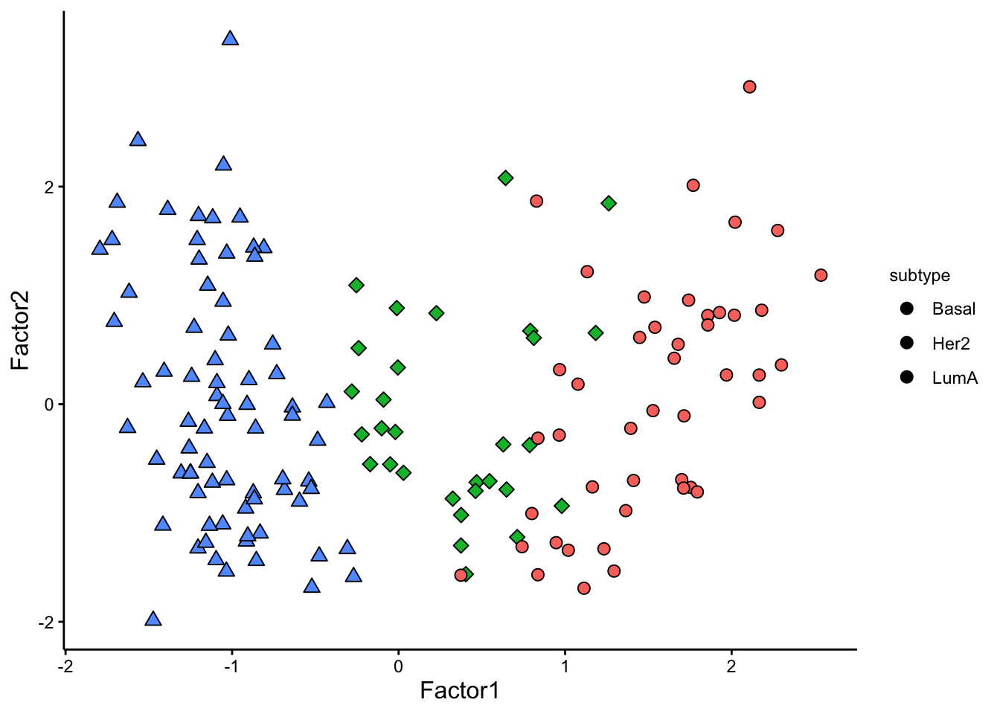
We can see that the pattern in Factor1 has captures the group differences. We should not have a look at the weights for this factor to figure out what are the most important features that contribute to this pattern.
Feature weights play an important role in understanding the influence of each feature on a given factor. These weights offer a quantifiable score for every feature in relation to its respective factor. Essentially, when a feature doesn’t correlate with a factor, its weight is anticipated to hover around zero. Conversely, features that are robustly associated with the factor will display large absolute weight values. The polarity of the weight whether positive or negative reveals the nature of the relationship: a positive weight suggests that the feature level elevates in instances with positive factor values and the opposite for negative weights.
Let’s look athe top 10 features in mRNA.
plot_top_weights(MOFAobject,view = "mrna",
factor = 1,
nfeatures = 10,
scale = T
)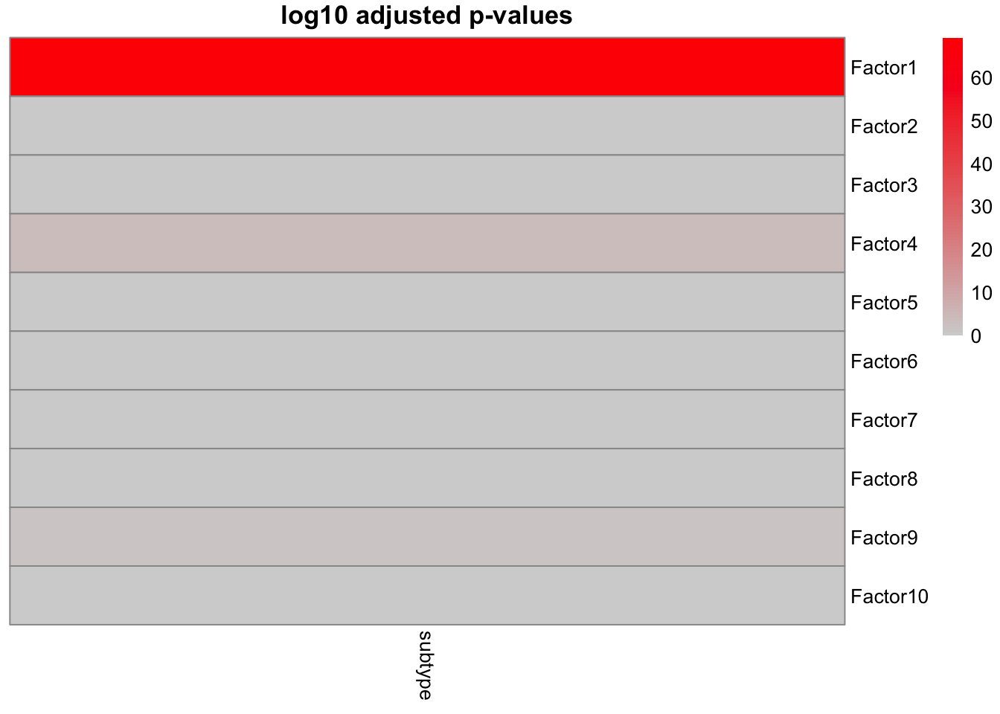
The plot suggest that STC2 has a strong negative relationship with Factor1. Looking back at the score plot, we see that our Basal subtype has ended up on the right of the plot, Her2 in the middle and LumA on the left. This suggest that the expression of STC2 is higher in LumA vs Her2 and also Her2 vs LumA. Let’s check it:
plot_data_scatter(MOFAobject,
view = "mrna",
factor = 1, features = "STC2",color_by = "subtype"
)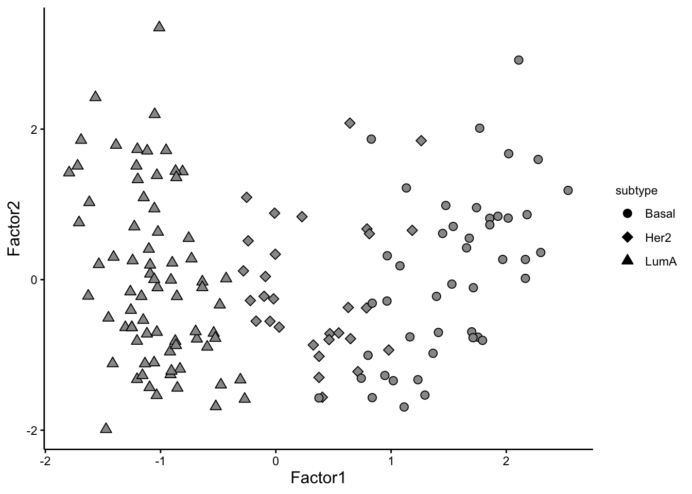
Great. But we have so many other features, do we have a subgroup of features in our data:
sample_group<-samples_metadata(MOFAobject)
rownames(sample_group)<-sample_group[,1]
plot_data_heatmap(MOFAobject,
view = "mrna",
factor = 1,
cluster_rows = TRUE, cluster_cols = FALSE,annotation_samples = sample_group[,"subtype",drop=F],
show_rownames = TRUE, show_colnames = FALSE,
scale = "row"
)'annotation_samples' provided as a data.frame, please make sure that the rownames match the sample namesWe can at least see two big groups of genes having contrasting expression pattern.
Can you plot the expression of some of genes in each group?
MOFA provies a lot more functionality and visualization tools which are not covered here. For many excellent case-caes, see here: https://biofam.github.io/MOFA2/tutorials.html
Your main task is to perform MOFA on the test data which is in breast.TCGA$data.test 1. Do you see the same pattern as in the training set? 2. Do the top 10 most important features overlap between training and testing? 3. How about the grouping of the features?